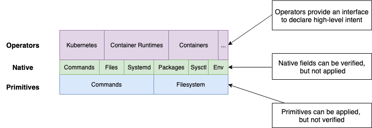

Concepts
Design

Mental Models

konfigadm intentionally reuses mental models and concepts from kubernetes, golang and ansible these include:
- Kubernetes declarative model for specifying intent
- Operators for providing higher-order abstractions
- Go build tags in comments for specifying behavior based on OS, Cloud etc..
- Ansible's way of defining variables and allowing for merging of multiple variable files.
Apps
Apps provide an abstraction over low-level native and primitive elements, They describe high-level intent for using an application that may require multiple elements to configure.
Native
Native elements, are not application specific they include packages, repositories, keys, containers, sysctls and environment variables.
e.g running echo "kubernetes: {version: 1.14.1}" | konfigadm minify -c - will result in the application being transformed into native elements.
packageRepos:
- deb https://apt.kubernetes.io/ kubernetes-xenial main #+debian
- https://packages.cloud.google.com/yum/repos/kubernetes-el7-x86_64 #+redhat
gpg:
- https://packages.cloud.google.com/apt/doc/apt-key.gpg #+debian
- https://packages.cloud.google.com/yum/doc/yum-key.gpg #+redhat
- https://packages.cloud.google.com/yum/doc/rpm-package-key.gpg #+redhat
packages:
- kubelet=1.14.1
- kubeadm=1.14.1
- kubectl=1.14.1
sysctls:
vm.swapinness: 1
Native elements are verifiable, i.e. if you specify a container runtime then konfigadm will verify that the runtime has a service enabled and started and that root can connect to the daemon and list running containers.
Primitives
Primitives are the low-level commands and files that are need to implement native items.
For example a package: [curl] native element would create a apt-get install -y curl primitive command on debian systems and yum install -y curl on redhat systems
The relationship between the 3 kinds is similar to Deployment, ReplicaSet and Pod. Apps insert and/or update native elements, native elements are then “compiled” down to primitives.